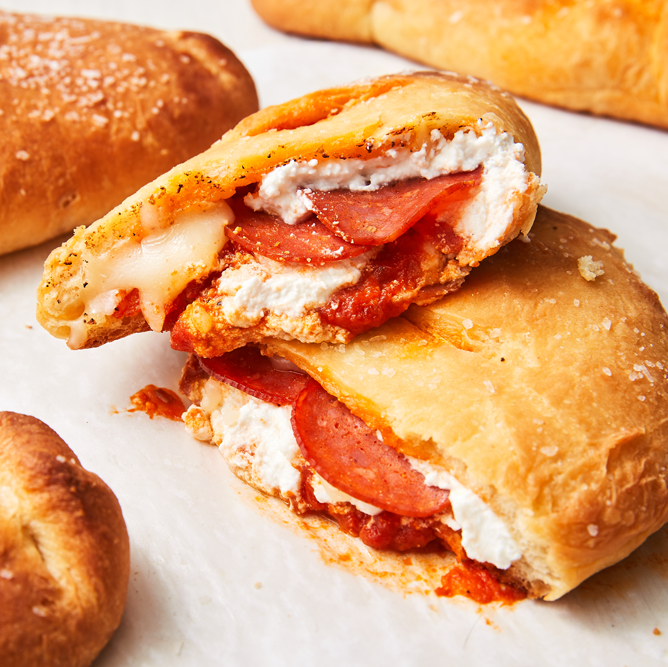

Calzone

Description
A calzone is an Italian dish that features a circular piece of pizza or yeasted bread dough that's folded in half over a filling that includes ricotta, and often mozzarella and Parmesan, too, cured meats, vegetables and herbs, then sealed shut using a crimping technique
Ingredients
- 1 ¼ cups water
- 1 teaspoon salt
- 3 cups bread flour
- 1 teaspoon dry milk powder
- 1 ½ tablespoons white sugar
- 2 teaspoons active dry yeast
- ¾ cup pizza sauce
- 4 ounces pepperoni sausage, chopped
- 1 ¼ cups shredded mozzarella cheese
- 2 tablespoons butter, melted
Directions
- Place water, salt, bread flour, dry milk, sugar, and yeast in the pan of the bread machine in the order suggested by the manufacturer. Select Dough cycle.
- When the cycle has finished, preheat the oven to 350 degrees F (175 degrees C). Lightly grease a baking sheet.
- Roll out dough on a lightly floured surface; shape it into a 16x10-inch rectangle. Transfer to prepared baking sheet.
- In a small bowl, mix together chopped pepperoni and mozzarella. Spoon pizza sauce in a stripe down the center of dough lengthwise; add pepperoni and cheese filling. Make diagonal cuts 1 1/2 inches apart down each side, cutting within a 1/2 inch of the filling. Criss-cross strips over filling, sealing with water. Brush top with melted butter.
- Bake calzone in preheated oven for 35 to 45 minutes.